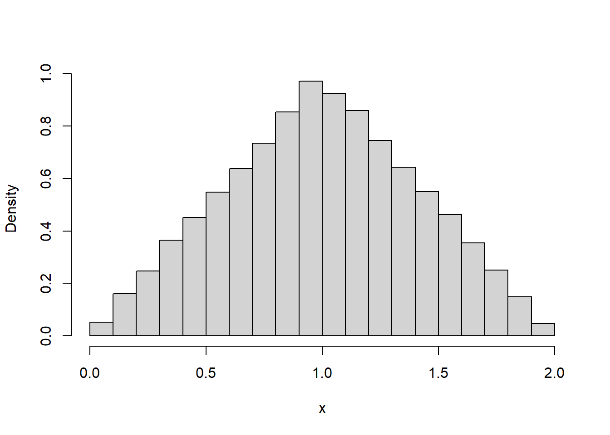
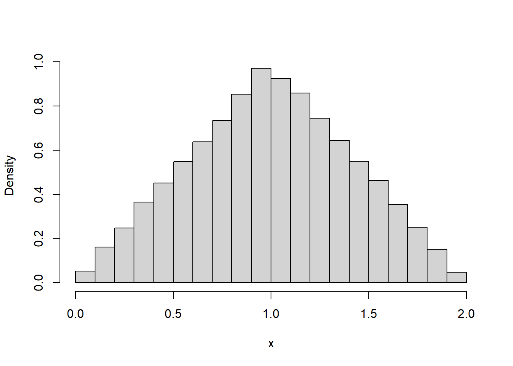
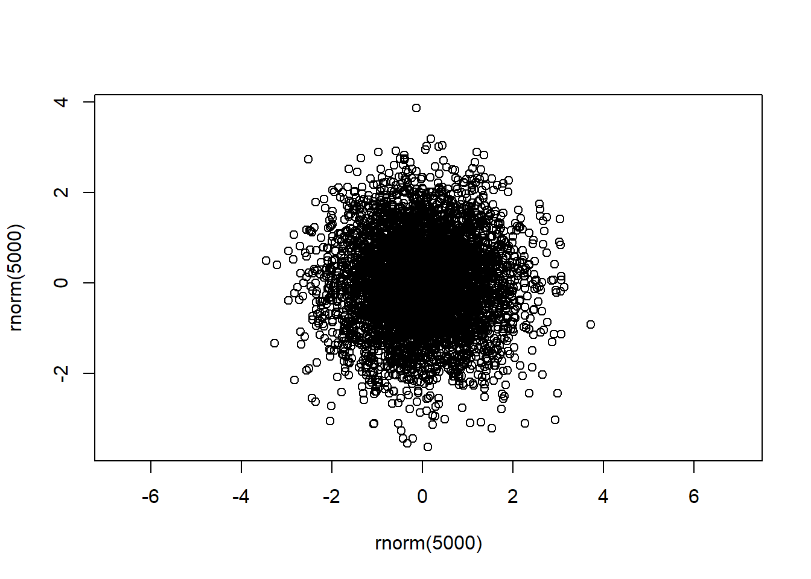
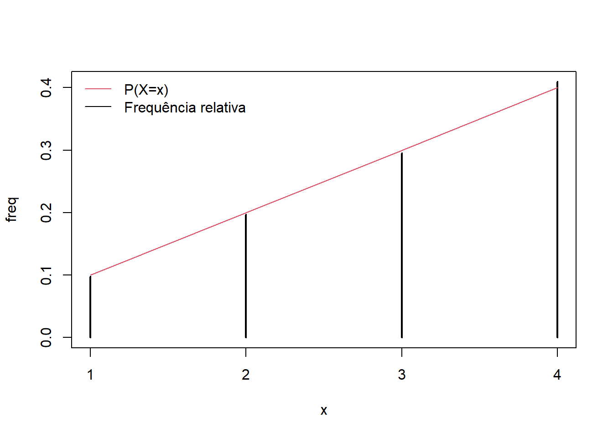
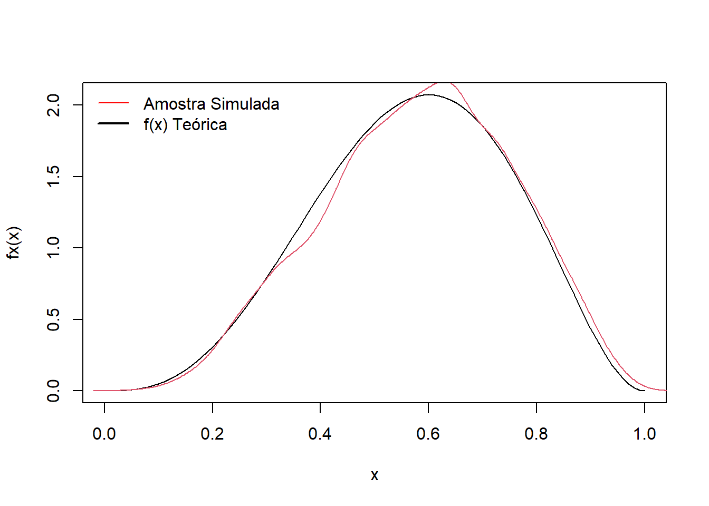
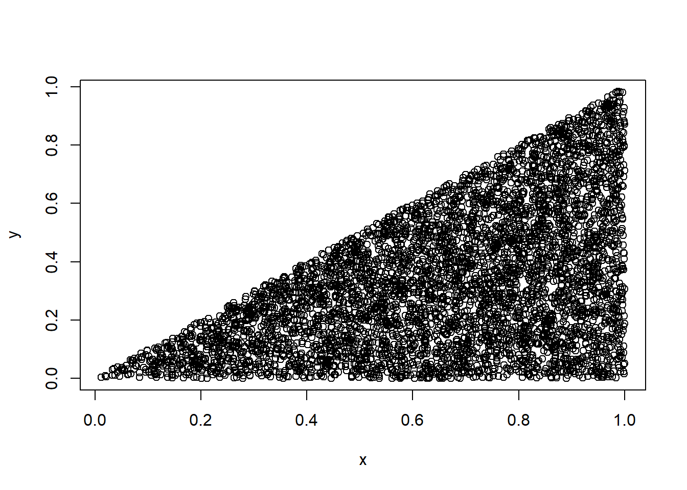

n = 50000
u1 = runif(n)
u2 = runif(n)
x = u1 + u2
hist(x,freq = FALSE, main = '')
Leitura
Anteriormente, vimos que é possível gerar números que se assemelham a uma amostra de variáveis aleatórias independentes com distribuição Uniforme(0,1). Em particular, utilizamos a função runif() do R para este fim.
Note que isto implica que podemos simular qualquer distribuição que seja função de variáveis aleatórias uniformes. O exemplo abaixo mostra como gerar amostras da distribuição Triangular(0,1,2)
Exemplo. Seja \(X\sim\hbox{Triangular}(0,1,2)\), cuja função densidade é dada por \[f(x)=1-|x-1|,\] com \(x\in(0,2)\). Sejam \(U_1\) e \(U_2\) variáveis aleatórias independentes com distribuição Uniforme(0,1). Pode-se mostrar que \(X=U_1+U_2\hbox{Triangular}(0,1,2)\). Portanto, podemos simular da distribuição de \(X\) com o seguinte algoritmo:
Abaixo, simulamos uma amostra tamanho 5000 de \(X\sim\hbox{Triangular}(0,1,2)\):
n = 50000
u1 = runif(n)
u2 = runif(n)
x = u1 + u2
hist(x,freq = FALSE, main = '')
Exercício. A função densidade da distribuição de Bates é dada por \[f(x)=\frac{n}{2(n-1)!}\sum_{k=0}^{n}(-1)^k{n\choose k }(nx-k)^{n-1}\hbox{sgn}(nx-k),\] onde \(n\geq 1\) é inteiro e \(\hbox{sgn}(a)\) é o sinal de \(a\) (+1 se \(a\) é positivo e \(-1\) se \(a\) é negativo). A distribuição de Bates tem aplicação em formação de feixe e síntese de diagrama de irradiação no campo da engenharia elétrica.
Contudo, pode-se mostrar que
\[X=\frac{1}{n}\sum_{i=1}^n U_i,\] onde \(U_1,\ldots,U_n\) são variáveis independentes com distribuição Uniforme(0,1). Deste modo, para \(n\) suficientemente grande, o Teorema Central do Limite garante que
\[X\approx N\left(\frac{1}{2}, \frac{1}{12n} \right).\] Deste modo, a distribuição Bates também pode ser utilizada como aproximação para a distribuição normal. Vamos explorar esse útlimo aspecto com mais detalhes.
Como gerar uniformes e fazer operções básicas como somas e divisões tem custo computacional baixo, é usual simular da distribuição Bates, com o objetivo de obter amostras de uma normal, em problemas que não exigem muita precisão como simulação de normais em de jogos eletrônicos. Fazendo
\[Y=\sqrt{12n}\left(X-\frac{1}{2}\right),\] teremos que \(Y\approx N(0,1)\). Para manter o custo computacional ainda baixo, é usual escolher \(n=12\), o que evita realizar o cálculo da raiz quadrada. O seguinte algoritmo simula uma variável com distribuição (aproximada) normal padrão:
Simule uma amostra aleatória \(u_1,\ldots,u_{12}\) com distribuição Uniforme(0,1)
Calcule \(x=\sum_{i=1}^{12} x_i/12\)
Retorne o valor de \(y= 12(x-1/2)\)
Considerando o algoritmo acima:
ecdf) da amostra simulada com a função de distribuição da normal padrão (pnorm).Um exemplo mais elaborado, para gerar amostras da distribuição normal padrão a partir de uniformes, é dado abaixo.
Algoritmo Box-Muller - Geração de normais padrão
Gere \(u_1,u_2\sim\hbox{Uniforme(0,1)}\) independentes
Faça \(x_1= \sqrt{-2 \log(u_1)}\cos(2\pi u_2)\) e \(x_2 =\sqrt{-2\log(u_1)}\sin(2\pi u_2)\)
Exercício Simule uma amostra de tamanho 5000 da distribuição Normal(0,1) utilizado o algoritmo de Box-Muller.
O algoritmo de Box-Muller foi um dos primeiros geradores de normais e sua aplicação mostra a fragilidade dos primeiros geradores congruenciais, como ilustra o exemplo abaixo.
Example 5.1 O gráfico de dispersão de duas amostras indepedentes de normais padrão deve ter um comportamento de pontos ao acaso dentro de uma circunferência, como mostrado abaixo:
plot(rnorm(5000),rnorm(5000), asp =1)
Considere então Gerador Congruencial Linear conhecido como RANDOM:
lcg_random <- function(n, seed = 123, a = 106, c = 1283, m = 6075) {
# n: número de pontos a serem gerados
# seed: semente inicial
# a, c, m: parâmetros do LCG: X_n+1 = (a * X_n + c) mod m
resultados <- numeric(n)
X <- seed
for (i in 1:n) {
X <- (a * X + c) %% m
resultados[i] <- X / m # Normaliza para o intervalo [0, 1]
}
return(resultados)
}Ao gerar duas amostras independentes de normais padrão pelo algoritmo de Box-Muller, utilizando para as uniformes do gerador RANDOM, obtemos o seguinte gráfico de dispersão, que não possui o comportamento esperado:

O teorema abaixo é a chave para simular outras distribuições.
Teorema da Probabilidade Integral.
Se \(U=F_X(X)\), então \(U\sim\)Uniforme(0,1).
Prova Defina \[F_X^{-1}(u)=\min\{x:u\leq F_X(x)\}.\] Então, \[F_U(u)=P(U\leq u)=P(F_X(X)\leq u)=P(X\leq F^{-1}_X(u))=F_X(F^{-1}_X(u))=u.\]
A partir do Teorema da Probabilidade Integral, podemos estabelecer a relação \(X=F_X^{-1}(U)\). Desde modo, podemos gerar amostras da distribuição de \(X\) do seguinte modo:
Algoritmo do Método da Inversão
Gere \(u\sim \hbox{Unirforme}(0,1)\)
Faça \(x=F_X^{-1}(u)\)
Exemplo 2.1. Geração de exponenciais Se \(X\sim\hbox{Exponencial}(\lambda)\), então \[F_X(x)=1-e^{-\lambda x}\] e \[F^{-1}_X(u)=-\frac{1}{\lambda}\log(1-u).\]
Assim, podemos gerar uma amostra de \(n\) variáveis aleatórias independentes com distibuição Exponencial com o seguinte algoritmo:
Gere \(u_1,\ldots,u_n\) independentes com distribuição Uniforme(0,1)
Retorne \(x_i=-\frac{1}{\lambda}\log(1-u_i)\)
É importante notar que \(1-u_i\) pode ser trocado por \(u_i\) sem prejuízos, uma vez que \(1-U_i\sim\hbox{Uniforme}(0,1)\).
Exercício.
Gere uma amostra de tamanho 5000 do modelo Exponencial(3) utilizando o método da inversão.
Faça o gráfico da função de distribuição empírica (ecdf) e compare com a gráfico da função de distribuição da Exponencial(3).
Exercício. A distribuição Weibull é muito útil para análise de sobrevida e para valores extremos. Sua função distribuição é dada por
\[F(x)=1-e^{-(x/\lambda)^\kappa},\] onde \(x,\lambda,\kappa>0\). Construa um gerador de números aleatórios para essa distribuição utilizando o Método da Inversão.
Exemplo 2.2. Geração de Bernoullis. Se \(X\sim\hbox{Bernoulli}(\theta)\) então,
\[F_X(x)=\left\{\begin{array}{ll}0&,x<0\\ 1-\theta&,0\leq x < 1\\ 1&,x\geq 1\end{array}\right.\] então,
\[F_X^{-1}(u)=\left\{\begin{array}{ll}0&,0<u\leq 1-\theta\\ 1&,1-\theta<u<1\end{array}\right.\] Portanto, podemos gerar uma amostra de \(n\) variáveis independentes com distribuição Bernoulli(\(\theta\)) utilizando o seguinte algoritmo:
Acima, mostramos como gerar uma amostra de tamanho \(n\) da distribuição Bernoulli(\(\theta\)). A soma destes valores é uma amostra de tamanho 1 de uma distribuição Binomial(\(n,\theta\)) e é imediata a implementação para uma amostra de tamanho qualquer. Na verdade, simular binomiais através da soma de Bernoullis não é uma estratégia ótima (veja Kachitvichyanukul & Schmeiser (1988)), mas é um exemplo de como podemos utilizar a distribuição uniforme para gerar uma infinidade de outras distribuições.
Seja \(X\) uma variável aleatória discreta. Seja \(p_j=P(X=j)\). O Método da Inversão consiste:
Simular \(U\sim\hbox{Uniforme}\)
Encontrar \(j\) que satisfaz o critério de seleção
\[\sum_{i=1}^{j-1}p_j< U \leq \sum_{i=1}^jp_j.\]
Se o suporte de \(X\) é finito, então o método da inversão é denominado Table Lookup (pesquisa em tabela). Nesse caso, uma tabela é construída com duas colunas, sendo que uma possui os possíveis valores de \(X\) e a outra o critério que permite dizer que o ponto \(j\) foi simulado a partir de \(U\).
Os principais algoritmos de pesquisa em tabela são
Busca Sequencial (Build-up search).: a tabela é construída de modo iterativo em tempo real até obter o critério de seleção.
Busca Binária (Chop-down search).: utiliza uma tabela já pronta e uma busca semelhante ao método da bisseção até obter o critério de seleção.
Sem perda de generalidade, considere que \(j\in\{1,\ldots,k\}\). O método de Busca Sequencial começa verificando se \(U\leq p_1\). Em caso afirmativo, o valor 1 é gerado. Senão, é fato que \(U>p_1\) e verifica-se se \(U\leq p_1+p_2\). Caso \(U\leq p_1+p_2\), então é fato que \(p_1<U\leq p_1+p_2\) e o valor 2 é gerado. Caso contrário, continuamos acumulando as probabilidades até encontrar o valor \(j\) que satisfaz o critério de seleção.
Algoritmo Busca Sequencial.
Gere \(u\sim\hbox{Uniforme}(0,1)\). Faça \(j=1\) e \(s=p_1\)
Example 5.2 Considere a função de distribuição
\[P(X=x)=\frac{x}{10},\] onde \(x\in\{1,2,3,4\}\). A tabela de busca é
\[\begin{array}{c|c|c}\hline x & F(x) & \hbox{Intervalo de busca}\\ \hline 1 & \frac{1}{10} & (0,\frac{1}{10}] \\ 2& \frac{3}{10} & (\frac{1}{10}, \frac{3}{10}]\\ 3 & \frac{6}{10} & (\frac{3}{10},\frac{6}{10}] \\ 4 & 1 & (\frac{6}{10},1] \\ \hline \end{array}\]
Observe que o método de Busca Sequencial não precisa construir a tabela inteira para verificar se \(u\) está no intervalo de busca. Por exemplo, se \(u= 2/10\), o método começa com \(j=1\), \(s=p_1=1/10\) e faz as seguintes iterações:
Iteração 1. Como \(u\nleq s=1/10\), não geramos um número. Temos que \(j=j+1=2\) e \(s=s+p_2=3/10\)
Iteração 2. Como \(u=2/10<3/10\), o valor \(j=2\) é gerado.
Exercício. Considere um jogo eletrônico, no qual o jogador recebe um prêmio após derrotar um monstro. Existem 5 prêmios possíveis e a probabilidade do jogador receber cada um dos itens é dada abaixo.
\[\begin{array}{c|l|c}\hline \hbox{Índice}& \hbox{Item} & \hbox{Probabilidade}\\ \hline 1&\hbox{500 Moedas de Ouro} &0,50\\ 2&\hbox{Gema Rara} &0,25\\ 3&\hbox{Poção de Cura} &0,15\\ 4&\hbox{Espada Mágica} &0,08 \\ 5&\hbox{Pergaminho Lendário} &0,02\\ \hline \end{array}\]
Construa um algoritmo para simular os itens acima, considerando a busca sequencial.
Como a busca sequencial não precisa construir a tabela toda, ela pode ser utilizada para variáveis discretas com suporte infinito.
Exercício Dizemos que \(X\sim\hbox{Borel}(\alpha)\) se sua função de probabilidade é dada por \[P(X=x)=\frac{e^{-\alpha x}(\alpha x)^{x-1}}{x!},\] com \(\alpha\in(0,1)\) e \(x=1,2,\ldots,\). Contrua um gerador para simular uma amostra de variáveis aleatórias independentes de tamanho \(n\) para um \(\alpha\) fixado utilizando a busca sequencial.
Considere uma distribuição discreta com suporte \(\{1,2,\ldots,k\}\). Considere que uma tabela com a função de distribuição está construída. O método da busca binária começa selecionando o ponto \(j\) no meio da tabela. Ao comparar \(u\) com \(F(j)\), temos duas situações:
Se \(u\leq F(j)\), então todos os valores maiores que \(j\) não podem ser gerados. O ponto que vai ser selecionado deve estar no conjunto \(\{1,\ldots,j\}\)
Se \(u> F(j)\), então os valores \(x\leq j\). Então, o ponto que vai ser selecionado deve estar no conjunto \(\{j+1,\ldots,k\}\)
Deste modo, uma nova busca é criada, considerando apenas os valores que podem ser simulados.
Algoritmo Busca Binária
Variáveis do Algoritmo:
low: O índice mais baixo do nosso intervalo de busca atual.
high: O índice mais alto do nosso intervalo de busca atual.
mid: O índice do meio do intervalo de busca.
Passos do Algoritmo (usando índices de 1 a k):
Inicialização:
Gere \(U\sim\)Uniforme(0,1). Defina os limites da busca: low = 1, high = k.
Loop de Busca: Continue o processo enquanto o intervalo de busca tiver mais de um elemento (low < high):
\[\hbox{mid}=\left\lfloor \frac{\hbox{low}+\hbox{high}}{2}\right\rfloor\]
\[\hbox{low}=\hbox{mid}+1\] - Se \(U\leq F(\hbox{mod})\): Isso significa que \(U\) está na metade inferior do espaço de probabilidade. Portanto, descartamos a metade superior da busca, mas mantemos mid como um candidato potencial.
\[\hbox{high}=\hbox{mid}\]
Terminação: O loop termina quando low e high se encontram (low = high). Retorne \(j=\)low.
É importante notar que uma das vantagens do R é a vetorização. Nesse sentido, a busca binária pode ser rapidamente implementada uma vez que \(U\) pode ser comparada simultaneamente com todos os valores de \(F(x)\). Essa verificação está implementada na função findInterval.
Example 5.3 Considere novamente a função de distribuição
\[P(X=x)=\frac{x}{10},\] onde \(x\in\{1,2,3,4\}\). A tabela de busca é
\[\begin{array}{c|c|c}\hline x & F(x) & \hbox{Intervalo de busca}\\ \hline 1 & \frac{1}{10} & (0,\frac{1}{10}] \\ 2& \frac{3}{10} & (\frac{1}{10}, \frac{3}{10}]\\ 3 & \frac{6}{10} & (\frac{3}{10},\frac{6}{10}] \\ 4 & 1 & (\frac{6}{10},1] \\ \hline \end{array}\] Vamos guardar os pontos que delimitam o intervalo de busca no vetor abaixo:
intervalos <- c(0, .1, .3, .6, 1)Vamos simular uma amostra de tamanho 5000 desta tabela utilizando a função findInterval.:
n <- 5000
u <- runif(n)
x <- findInterval(u, intervalos)Por último, vamos encontrar a tabela de frequências relativas e comparar com as probabilidades do modelo:
freq <- prop.table( table(x) )
plot(freq)
lines( 1:4, (1:4)/10, col =2)
legend('topleft',c('P(X=x)','Frequência relativa'), col = c(2,1), lty=1, bty='n')
Exercício. Os dados a seguir mostram o número de meninos entre os 12 primeiros filhos de 6115 famílias com 13 filhos, retirados de registros hospitalares na Saxônia do século XIX.
\[\begin{array}{l|cccccccccccc}\hline \hbox{Meninos} & 0& 1& 2& 3& 4& 5& 6& 7& 8& 9& 10& 11& 12\\ \hbox{Frequência}& 3& 24& 104& 286& 670& 1033& 1343& 1112& 829& 478& 181& 45& 7\\ \hline\end{array}\]
Considerando que as frequências relativas são bos aproximações para a função de probabilidade, crie um simulador para essa distribuição.
Seja \(X\) uma variável aleatória contínua. Existem casos nos quais temos a expressão analítica para \(F_X(.)\) mas não para \(F_X^{-1}(.)\). Ainda assim, podemos utilizar o Método da Inversão da seguinte forma:
Gere \(u\sim\hbox{Uniforme}(0,1)\)
Encontre numericamente o valor de \(x\) que resolve \(u=F_X(x)\)
Conforme discutido no Capítulo 1, a solução está sujeita a uma tolerância \(\varepsilon>0\) pré-especificada. Isso implica que qualquer valor \(x\) que satisfaça
\[|u-F_X(x)|<\varepsilon\]
é uma solução.
Exercício
Considere a densidade \[f_X(x)=\frac{x\sin(x)}{\sin(1)-\cos(1)},\] com \(x\in(0,1)\). Note que \[F_X(x)=\frac{\sin(x)-x\cos(x)}{\sin(1)-\cos(1)}\] mas não há expressão para \(F_X^{-1}(.)\). Crie um gerador para essa distribuição utilizando o método da inversão e utilize-o para obter uma amostra de tamanho 50000. Monitore o tempo de execução utilizando a função Sys.time.
O exercício acima mostra que o método da inversão, quando requer algoritmos de busca de raízes, pode ser computacionalmente intensivo. Uma alternativa mais eficiente combina a pesquisa em tabela (geralmente implementada com busca binária) e a interpolação, método conhecido como Interpolação em Tabela.
Seja \(X\) uma variável aleatória contínua com valores no domínio \(D\). Assuma que, para um conjunto de pontos \(\{y_1,\ldots,y_m\}\in D\), a seguinte tabela está disponível
\[\begin{array}{c|c|c}\hline \hbox{Índice} & \hbox{x} & F(x)\\ \hline 1 & y_1 & F(y_1) \\ 2 & y_2 & F(y_2) \\ \vdots & \vdots & \vdots \\ m & y_m & F(y_m)\\\hline \end{array}\]
O Método da Interpolação de Tabelas consiste em usar um algoritmo de busca para encontrar o índice \(j\in\{1,\ldots,m\}\) tal que \(F(y_{j-1})<u\leq F(y_j)\). Desde que \(m\) seja grande o suficiente, o intervalo \([y_{j-1},y_j]\) será pequeno e podemos utilizar uma interpolação para uma boa aproximação de \(x\) a partir de \(u\). As funções interpolantes mais simples são as lineares, embora polinômios de graus 2 ou 3 possam dar melhores ajustes. Para a interpolação linear, o valor simulado é a coordenada \(x\) sobre a reta que conecta \((y_{j-1},F(y_{j-1}))\) e \((y_{j},F(y_{j}))\), dado por
\[x=y_{j-1}+(y_j-y_{j-1})\frac{u-F(y_{j-1})}{F(y_j)-F(y_{j-1})}.\] Abaixo, ilustramos como \(x\) pode ser simulado por interpolação linear. Alinha sólida em preto mostra \(F(x)\) enquanto que a pontilhada em preto apresenta a interpolação linear. O valor real a ser simulado é \(x^o\) enquanto \(x\) é o valor simulado pela interpolação.

A função rnorm utiliza uma tabela com precisão de 16 dígitos para simular amostras da distribuição normal (ver Wichura (1988)).
O algoritmo base para o Método da Interpolação em Tabela é dado abaixo.
Método da Interpolação em Tabela (interpolação linear)
Sejam \(y_1,\ldots,y_M\) os valores tabelados e sejam \(v_i=F_X(y_i)\), para \(i=1,\ldots,M\)
Gere \(u\sim\hbox{Uniforme}(0,1)\)
Encontre \(k\) tal que \(v_{k-1}<u\leq v_k\)
A partir da reta que passa em \((y_{k-1},v_{k-1}),(y_k,v_k)\), faça
\[x=y_k+(y_k-y_{k-1})\frac{u-v_{k-1}}{v_k-v_{k-1}}\]
Exemplo. Considere a função densidade
\[f(x)= 60x^3(1-x)^2,\] com \(x\in(0,1)\), cuja função distribuição é dada por \[F(x)=15x^4-24x^5 + 10x^6.\] Abaixo, vamos construir uma tabela para a progressão 0,01 até 0,99 com razão 0,01.
Fx <- function(x) 15*x^4 -24*x^5 + 10*x^6
y <- c(0,seq(.01, .99, .01))
Índice = 1:length(y)
v <- Fx(y)
head( data.frame(Índice, y, v) ,6) Índice y v
1 1 0.00 0.000000e+00
2 2 0.01 1.476100e-07
3 3 0.02 2.323840e-06
4 4 0.03 1.157409e-05
5 5 0.04 3.598336e-05
6 6 0.05 8.640625e-05Abaixo, simulamos \(5000\) valores dessa distribuição utilizando o método da interpolação de tabelas:
n = 5000
u <- runif(5000)
# pesquisando o indice na tabela
j <- findInterval(u, v)
# interpolação
x <- y[j] + (y[j] - y[j-1])*( u- v[j-1])/( v[j] - v[j-1])
# gráfico
fx <- function(x) 60*x^3*(1-x)^2
curve( fx(x), 0,1)
lines(density(x), col =2)
legend("topleft", legend = c("Amostra Simulada", "f(x) Teórica"),
col = c("red", "black"), lty = 1, lwd = c(1, 2), bty = 'n')
Exercício. A função densidade da distribuição coseno elevado é dada por
\[f(x)=\frac{1}{2s}\left[1+\cos\left(\frac{x-\mu}{s}\pi\right)\right],\] onde \(x\in(-s+\mu,s+\mu)\). Pode-se mostrar que \[Z=\frac{X-\mu}{s}\] também tem distribuiçãoo coseno elevado, mas com \(\mu=0\) e \(s=1\) (ou seja, \(Z\) é a coseno elevado padrão). Deste modo, precisamos apenas construir um simulador para \(Z\), uma vez que \(X\) pode ser simulado através do seguinte algoritmo:
Simule \(z\) da distribuição coseno elevado padrão
Faça \(x=\mu+sz\).
Considerando que a função distribuição de \(Z\) é dada por
\[F(z)=\frac{1}{2}\left[1+z+\frac{\sin(\pi z)}{\pi}\right],\] com \(z\in(-1,1)\), construa um simulador para a distribuição coseno elevado padrão utilizando o método da interpolação em tabelas. Gere uma amostra de tamanho 50.000 e verifique se a amostra gerada se comporta como o esperado (utilize estatísticas como histograma, função de distribuição empírica ou o eestimador kernel).
Não é possível aplicar o Método da Inversão diretamente em vetores aleatórios. Contudo, o método é válido para distribuições condicionais univariadas, pois
\[F_{X|y}(x)=u\Leftrightarrow x=F_{X|y}^{-1}(u).\]
Deste modo, geramos uma amostra do vetor \({\bf X}\) do seguinte modo:
Gere \(u_1,\ldots,u_d\sim \hbox{Uniformes}(0,1)\) independentes
Faça \(x_1=F^{-1}_{X_1}(u_1)\)
Faça \(x_2=F^{-1}_{X_2|x_1}(u_2)\)
O algoritmo acima funciona porque ele imita proceduralmente a regra da cadeia da probabilidade. Cada variável no vetor é gerada de sua respectiva distribuição condicional, dados os valores de todas as variáveis que a precederam. Ao encadear esses valores, o vetor resultante é, por construção, uma amostra da distribuição conjunta desejada.
Exemplo 2.6 Seja \((X,Y)\) um vetor aleatório uniformemente distribuído no triângulo \(\Delta\), definido pelos vértices \(\{(0,0),(1,0),(1,1)\}\), cuja densidade é
\[f_{X,Y}(x,y)=2I((x,y)\in\Delta).\] Teremos que
\[f_Y(y)=\int_y^{1}2dx=2(1-y)\] com \(y\in(0,1).\) Além disso, \[F_Y(y)=\int_0^y 2(1-t)dt=2y-y^2\] e \(y\in(0,1)\). Portanto, podemos gerar \(Y\) através do Método da Inversão
Simule \(u\sim\hbox{Uniforme}(0,1)\)
Faça \(y=1-\sqrt{1-u}\)
Agora, note que
\[f(x|y)=\frac{f_{X,Y}(x,y)}{f_Y(y)}=\frac{2}{2(1-y)}=\frac{1}{1-y},\] com \(x\in(y,1)\), ou seja \(X|Y=y\sim\hbox{Uniforme}(y,1)\). Então, podemos gerar \((x,y)\) com o seguinte algoritmo:
Gere \(u\sim\hbox{Uniforme}(0,1)\)
Faça \(y = 1-\sqrt{1-u}\)
Gere \(x\sim\hbox{Uniforme}(y,1)\)
Abaixo, geramos uma amostra de tamanho 5000 dessa distribuição e mostramos um diagrama de dispersão.
u <- runif(5000)
y <- 1 - sqrt(1-u)
x <- runif(5000, y, 1)
plot(x,y)
Exercício. Seja \[P(X=x)=\frac{|x|+1}{4}\] e \[f(y|x)=\frac{1}{2s}\left[1+\cos\left(\frac{y-x}{s}\pi\right)\right]\] com \(y\in(-s+x,s+x)\). Para \(s=1\), simule uma amostra de tamanho 5.000 do vetor \((X,Y)\).
Geração eficiente de binomiais
Gerador de números gaussianos usando o método da inversão por interpolação